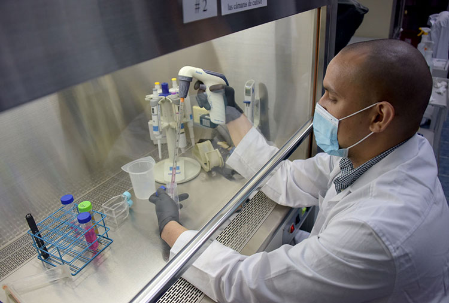
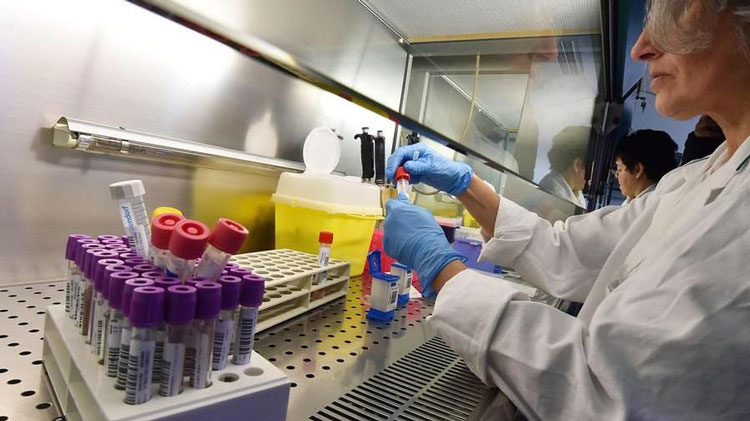

Después del tratamiento de este producto se olvidará de la diabetes: el efecto se confirma mediante pruebas independientes
Hoy entrevistamos al eminente científico Pablo Navarro. Este talentoso hombre recientemente introdujo un nuevo método para tratar la diabetes en todo el mundo.
Gracias a este método, ahora miles de personas podrán participar en el tratamiento efectivo de la diabetes desde la comodidad de sus hogares. Hoy, Pablo Navarro hablará sobre cómo se desarrolló el prodcuto y las dificultades que tuvieron que enfrentar.
- ¡Hola, Pablo! Cuéntenos un poco sobre usted y su nuevo desarrollo
- ¡Buenas! Estoy muy contento de haber sido invitado a esta entrevista. Soy un científico, especialista en biología molecular. Quiero compartir mi mayor descubrimiento por el que fui nominado al premio Nobel. Con nuestro equipo de especialistas de mi propio campo, hemos desarrollado un nuevo método para tratar la diabetes que es adecuado para cualquier persona a cualquier edad.
Este método no elimina completamente la diabetes, pero lleva la enfermedad en remisión completa: el período de la diabetes sin terapia médica puede durar más de 5 años.
Es importante entender que este resultado se puede lograr sin tomar medicamentos químicos, citas costosas de los médicos y interminables colas en la clínica.
El nuevo método permitirá, literalmente, durante el tratamiento, olvidarse de la diabetes. Esta enfermedad entrará en una etapa tal que no causará ninguna molestia durante mucho tiempo.
— ¿Por qué el nuevo método es la mejor alternativa a otros medicamentos?
— El nuevo método de tratamiento funciona de acuerdo con principios completamente diferentes. Su objetivo principal no es solo aliviar los síntomas de la diabetes por un tiempo, sino también actuar sobre las causas de la enfermedad.
Ningún medicamento en el mundo funciona con este principio. Buscamos específicamente medios similares para refinar la composición y hacer el mejor medicamento del mundo. Pero, como resultó, no existen análogos. Por lo tanto, el desarrollo de un nuevo método se llevó a cabo desde cero.
— ¿Por qué es un producto para la diabetes y no para otra enfermedad?
- Muchos saben que yo mismo tengo diabetes tipo dos. He vivido sin problemas con esta enfermedad durante 7 años tomando medicamentos para diabéticos comunes. En un momento, la diabetes comenzó a progresar dramáticamente, el azúcar se elevó a 12 mmol/L. No funcionó para estabilizar la situación, me hospitalizaron por dos meses.
Después de darme de alta, pasó exactamente un año y la situación se repitió. En el momento en que estaba en el hospital por segunda vez, tomé la decisión de crear un remedio para la diabetes. Lo que tomaba no siempre ayudaba y tenía que cambiarlos regularmente.
- ¿Ha tenido experiencia en este campo? ¿Cómo logró crear un nuevo remedio?
- Antes de eso, había estado desarrollando medicamentos para una variedad de enfermedades durante más de 20 años. Pero lo que tenía que hacer no lo había hecho nadie. Renuncié a mi trabajo porque se autodidacta no era bienvenido allí, armé un equipo de entusiastas, alquilé un pequeño laboratorio y comencé a crear.
Se fue un año solo para investigar los componentes que se usarán en mi nuevo medicamento. Después de revisar todas las opciones posibles, nos decidimos por el hecho de que debe crearse a base de componentes naturales. Es más seguro, más asequible, no causa resistencia y es posible combinar varias sustancias activas a la vez.
Al mismo tiempo, surgió otro problema: cómo extraer sustancias con alta biodisponibilidad a partir de componentes vegetales, mientras que con una alta concentración de estos. La solución de este problema tomó solo seis meses, según los estándares de la actividad científica, este es un período muy corto. Podemos decir que tuvimos suerte. Uno de mis colegas, durante los experimentos de extracción, confundió "con éxito" los solventes (extractantes).

A mediados de 2019, creamos tres medicamentos con diferentes formulaciones con un nuevo método de extracción. En medio año, obtuvimos todas las certificaciones y comenzamos a realizar estudios clínicos.
- Cuéntenos un poco sobre el estudio, ¿qué resultados ha logrado?
— Reunimos a tres grupos de personas con diabetes, cada uno tomando un medicamento diferente. Durante 3 meses, rastreamos el estadio de la enfermedad de cada grupo.
Los dos primeros grupos mostraron aproximadamente los mismos resultados buenos: en el día 15-20, los síntomas de la diabetes disminuyeron significativamente, el azúcar en la sangre se mantuvo ligeramente por encima de lo normal, lo cual es aceptable. Después de un tratamiento completo, los diabéticos no se quejaban de los síntomas durante por más de 2 meses, luego regresaron nuevamente y se requirió un segunto tratamiento.
El tercer grupo nos sorprendió. Al quinto día, el 76% de los sujetos notaron una mejora significativa en el bienestar y la ausencia de picos de azúcar en la sangre. Después de completar el tratamiento, los pacientes que más tarde siguieron una dieta adecuada y llevaron un estilo de vida saludable, hasta la fecha no toman ningún medicamento: la enfermedad ha entrado en la etapa de remisión. Esta conclusión fue hecha por expertos médicos independientes.

Monitoreamos la salud del grupo 3 y hoy, algunos beben el tratamiento repetidamente para mantener el efecto positivo el mayor tiempo posible. Pero ese uso regular no es necesario.
- Díganos cómo funciona su remedio?
— La principal diferencia entre nuestro método de tratamiento y otros remedios es su enfoque integral. Solo gracias a esto es posible llevar la enfermedad en una etapa de remisión prolongada.
Este proceso, por supuesto, no siempre es rápido. Esto puede llevar varios meses. Si el paciente tiene la enfermedad en una etapa grave, es posible que se requiera un tratamiento repetido.
El remedio no aumenta los niveles de insulina en la sangre, por lo que es seguro. Los principios activos del medicamento penetran en las células musculares, grasas, hepáticas y comienzan a estimularlas para una mejor respuesta a la hormona insulina. Como resultado, las células del cuerpo humano comienzan a procesar más activamente la glucosa, lo que lleva a su disminución en la sangre. También reduce la concentración de glucosa en la sangre al inhibir su formación en el hígado.
Las personas con diabetes tienen un alto riesgo de trombosis. Este punto lo tomamos en cuenta al desarrollar el remedio. Los principios activos inhiben la coagulación de la sangre y ralentizan el flujo sanguíneo, reducen la posibilidad de coágulos de sangre, aseguran el uso efectivo del oxígeno atrapado en la sangre. Esto inhibe la formación de placas de colesterol y reduce los niveles de colesterol en la sangre.
Durante la investigación de la enfermedad, quedó claro que el exceso de peso juega un papel importante en el tratamiento de la diabetes. ¡Los kilos de más empeoran la condición del paciente en 3-4 veces! Es por eso que al desarrollar hemos prestado especial atención a esto. La composición del medicamento contiene componentes que tienen potentes propiedades para quemar grasa.
- Suena cierto que usted ha creado el mejor medicamento para la diabetes. Pero, ¿por qué todavía no está en las farmacias?
- Después de completar todos los estudios clínicos - comenzaron las complejidades. Casi ninguna de las compañías farmacéuticas estaba lista para producir nuestro producto por varias razones:
- El 80% de los fabricantes no tienen el equipo necesario;
- Aquellos que tienen equipos tienen un alto precio de producción;
- Las farmacias se niegan a vender nuestro medicamento, si están de acuerdo, entonces el precio es muy alto.
Dos meses pasaron buscando al fabricante y logramos encontrarlo. Es una pequeña empresa de fabricación en nuestro país. Apenas están comenzando sus actividades, por lo que los primeros lotes producen a un precio muy bajo.
Ahora estamos vendiendo a través de su sitio web oficial. Gracias al descuento del fabricante para la producción del medicamento, vendemos los primeros lotes con un descuento del 50%. Cualquier persona puede dejar la solicitud en el sitio y obtener asesoramiento de nuestros especialistas.